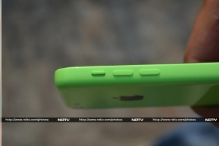
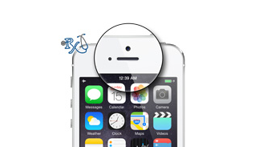
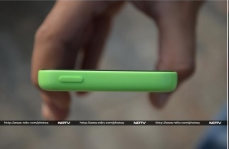

You can click the Home button, the volume button, the front camera, the
power button and the rear camera.
5c Home Button
**The Home Button — Simple. Iconic. Essential.**
Meet the button that keeps everything just one click away.
On the iPhone 5c, the Home button makes navigation feel
effortless—return to the Home screen, wake up your familiar
interface, and stay in control with a simple press.
Colorful iPhone. Classic design. One button that brings
it all home. 🍎

iPhone 5c Volume Buttons
**The Volume Buttons — Sound at Your Fingertips.**

Turn the volume up. Turn it down. Stay in control with a simple press.
The iPhone 5c’s dedicated volume buttons make adjusting your music,
videos, calls, and alerts quick and effortless.
Simple, responsive, and perfectly placed for everyday use.
**iPhone 5c — colorful design, effortless control.** 🔊📱
iPhone 5c Front Camera
**The Front Camera — Capture Yourself in Every Moment.**
Turn the camera toward you and make every moment your own.
The iPhone 5c’s front-facing camera is perfect for
selfies, video calls, and staying connected with the people who matter.
Simple. Fun. Always ready to capture **you**. 🤳📱
**iPhone 5c — colorful design, memorable moments.**

5c Power Button
**The Power Button — Power at Your Fingertips.**
A simple press is all it takes. The iPhone 5c’s
power button gives you quick, effortless control—wake
your device, lock the screen, or turn it on and off with ease.
Simple. Reliable. Always within reach. ⚡📱
**iPhone 5c — colorful design, effortless control.**

5c Rear Camera
**The Rear Camera — Capture Every Moment.**

From everyday memories to unforgettable adventures,
the iPhone 5c’s rear camera is ready to capture the world around you.
Point. Shoot. Save the moment.
Simple, colorful, and always ready to take your next photo. 📸📱
**iPhone 5c — colorful design, memorable moments.**